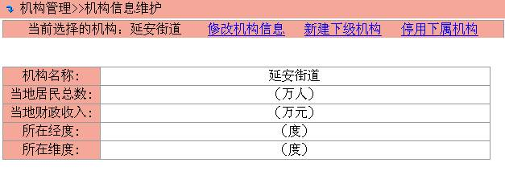
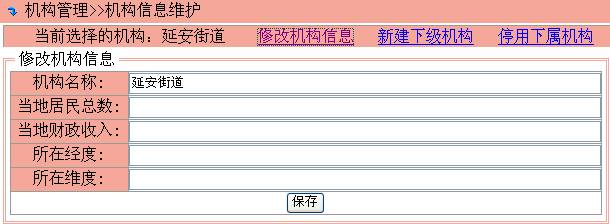
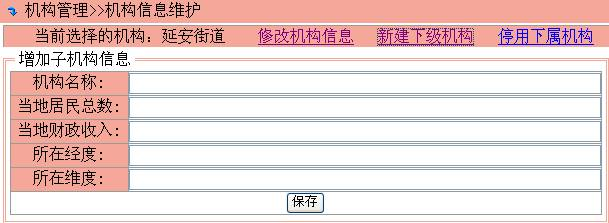
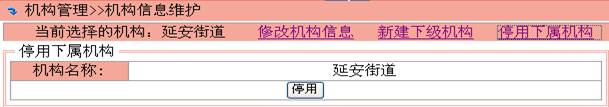

机构信息维护
机构信息维护包括修改机构信息、新建下级机构和停用下属机构。
单击菜单“机构管理>>机构信息维护”，在机构树中单击要操作的节点，出现“机构信息维护”处理界面，如下所示

(1) 修改机构信息
单击“修改机构信息”链接打开修改机构信息页，界面如下，输入完毕后按“保存”

(2) 新建下级机构
单击“新建下级机构”链接打开新建下级机构页，界面如下，输入完毕后按“保存”

(3) 停用下属机构
单击“停用下属机构”链接打开停用下属机构页，界面如下，按“停用”停止使用该机构
